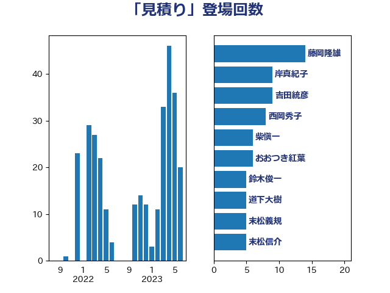

単語「見積り」

| 藤岡隆雄 | 立憲民主党 | 14 回 |
| 岸真紀子 | 立憲民主党 | 9 回 |
| 吉田統彦 | 立憲民主党 | 9 回 |
| 西岡秀子 | 国民民主党 | 8 回 |
| 柴愼一 | 立憲民主党 | 6 回 |
| おおつき紅葉 | 立憲民主党 | 6 回 |
| 鈴木俊一 | 自由民主党 | 5 回 |
| 道下大樹 | 立憲民主党 | 5 回 |
| 末松義規 | 立憲民主党 | 5 回 |
| 末松信介 | 自由民主党 | 5 回 |
| 岸田文雄 | 自由民主党 | 5 回 |
| 美延映夫 | 日本維新の会 | 4 回 |
| 加藤勝信 | 自由民主党 | 4 回 |
| 伊藤俊輔 | 立憲民主党 | 4 回 |
| 鈴木庸介 | 立憲民主党 | 3 回 |
| 金子恭之 | 自由民主党 | 3 回 |
| 水野素子 | 立憲民主党 | 3 回 |
| 櫻井周 | 立憲民主党 | 3 回 |
| 小池晃 | 日本共産党 | 3 回 |
| 城井崇 | 立憲民主党 | 3 回 |
| 吉川元 | 立憲民主党 | 3 回 |
| 前原誠司 | 国民民主党 | 3 回 |
| 高良鉄美 | 無所属 | 2 回 |
| 重徳和彦 | 立憲民主党 | 2 回 |
| 西村康稔 | 自由民主党 | 2 回 |
| 稲富修二 | 立憲民主党 | 2 回 |
| 田村貴昭 | 日本共産党 | 2 回 |
| 牧山ひろえ | 立憲民主党 | 2 回 |
| 源馬謙太郎 | 立憲民主党 | 2 回 |
| 柴田巧 | 日本維新の会 | 2 回 |
| 新妻秀規 | 公明党 | 2 回 |
| 佐藤啓 | 自由民主党 | 2 回 |
| 中司宏 | 日本維新の会 | 2 回 |
| 高橋千鶴子 | 日本共産党 | 1 回 |
| 階猛 | 立憲民主党 | 1 回 |
| 鈴木敦 | 国民民主党 | 1 回 |
| 輿水恵一 | 公明党 | 1 回 |
| 赤嶺政賢 | 日本共産党 | 1 回 |
| 萩生田光一 | 自由民主党 | 1 回 |
| 米山隆一 | 立憲民主党 | 1 回 |
| 篠原豪 | 立憲民主党 | 1 回 |
| 神谷宗幣 | 参政党 | 1 回 |
| 石川博崇 | 公明党 | 1 回 |
| 石井苗子 | 日本維新の会 | 1 回 |
| 田村智子 | 日本共産党 | 1 回 |
| 田中健 | 国民民主党 | 1 回 |
| 牧義夫 | 立憲民主党 | 1 回 |
| 湯原俊二 | 立憲民主党 | 1 回 |
| 渡辺周 | 立憲民主党 | 1 回 |
| 浜田靖一 | 自由民主党 | 1 回 |
| 浜地雅一 | 公明党 | 1 回 |
| 河西宏一 | 公明党 | 1 回 |
| 江島潔 | 自由民主党 | 1 回 |
| 横沢高徳 | 立憲民主党 | 1 回 |
| 森田俊和 | 立憲民主党 | 1 回 |
| 岬麻紀 | 日本維新の会 | 1 回 |
| 岡本あき子 | 立憲民主党 | 1 回 |
| 山谷えり子 | 自由民主党 | 1 回 |
| 山田勝彦 | 立憲民主党 | 1 回 |
| 山本太郎 | れいわ新選組 | 1 回 |
| 山岡達丸 | 立憲民主党 | 1 回 |
| 小野泰輔 | 日本維新の会 | 1 回 |
| 小沢雅仁 | 立憲民主党 | 1 回 |
| 小宮山泰子 | 立憲民主党 | 1 回 |
| 小倉將信 | 自由民主党 | 1 回 |
| 大西健介 | 立憲民主党 | 1 回 |
| 塩田博昭 | 公明党 | 1 回 |
| 塩川鉄也 | 日本共産党 | 1 回 |
| 堤かなめ | 立憲民主党 | 1 回 |
| 土田慎 | 自由民主党 | 1 回 |
| 仁木博文 | 無所属 | 1 回 |
| 井坂信彦 | 立憲民主党 | 1 回 |
| 中野英幸 | 自由民主党 | 1 回 |
| 中山展宏 | 自由民主党 | 1 回 |
| 下条みつ | 立憲民主党 | 1 回 |
| たがや亮 | れいわ新選組 | 1 回 |